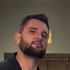
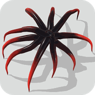
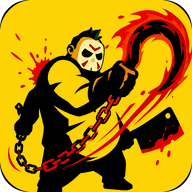
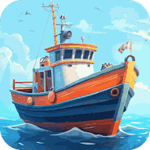
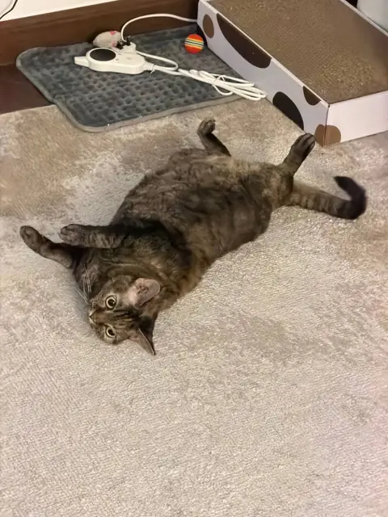
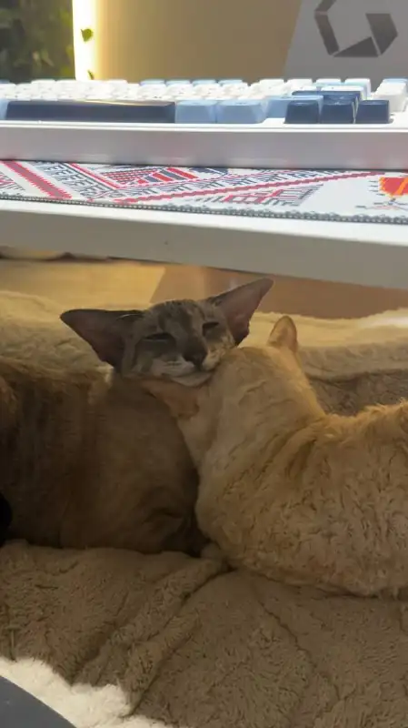

Вячеслав
37 лет
Вячеслав и Инна
Сооснователи Multicast Games: разрабатываем игры для мобильных устройств.
Мы оба из Мурманска. Любим Дубай за развитие, дух прогресса и новые технологии в повседневной жизни.

37 лет
42 года
Три проекта — выберите магазин

RPG Idle Space

Monster Idle RPG

Fishing Tycoon
Создаём и развиваем игры
Не пьём алкоголь
Роботы-пылесосы и автокормушки
Дубай — наш основной дом
Коты пользуются автотуалетом и точат когти только о когтеточку.

Любит вкусняшки, лежать на Вячеславе и приносить мячик, как пёс. Играет с автоматическими игрушками, а на котов поблизости может пошипеть.

Валяется рядом с Никсом и вылизывает его, просит Инну погладить пузико. От Вячеслава убегает.
Греется на дубайском солнышке, валяется рядом с Инной и выпрашивает вкусняшки. Любит прятаться и не откликается, пока мы в панике его ищем.
Скоро приедет к Пупе, Лупе и Никсу. Планируем переехать в более просторный и спокойный дом для всей семьи.
Спонсируем приюты для кошек и собак в Мурманске и Ереване.